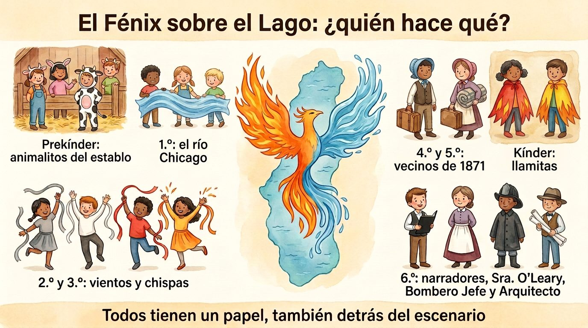

En breve
- Duración: entre 18 y 25 minutos. Unos 7 minutos son texto hablado; el resto es música, bailes, entradas y salidas, el canto y la reverencia.
- Elenco: desde unos 45 niños (un grupo pequeño por grado) hasta toda la escuela. Casi todos los grupos crecen o se encogen sin cambiar el guion.
- Idiomas: el guion está en español y en inglés, con las mismas líneas y el mismo orden: se puede hacer en un idioma o mezclar actos.
- Seguridad: nunca se usan llamas reales ni velas. Todo el fuego es de tela, fieltro y luz LED.
La obra en imágenes
Cinco infografías para presentar la obra al equipo docente, a los niños y a las familias.



Reparto y cantidades
Las cantidades son orientativas. La columna «Mínimo» sirve para una escuela pequeña o un solo salón por grado; «Máximo», para grados con varios salones. Los papeles con texto propio son fijos; lo que crece son los grupos.
| Grado | Papel | Mínimo | Recomendado | Máximo | Cómo crece |
|---|---|---|---|---|---|
| 6.º | Narradores 1 y 2 | 2 | 2 | 4 | Cada narración se puede repartir entre dos voces. |
| Sra. O'Leary, Bombero Jefe, Arquitecto | 3 | 3 | 6 | Se pueden hacer dos repartos (uno por función o uno por idioma). | |
| Torre de Agua y bandera (sin texto) | 1 | 3 | 3 | Uno sostiene la torre; dos despliegan la bandera. | |
| Equipo técnico (ver trabajos) | 4 | 8 | 15 | Sonido, luces, telón, utilería, paneles. | |
| Apuntadores | 0 | 1 | 2 | Siguen el guion entre bastidores. | |
| 4.º y 5.º | Vecinos 1 a 4, Agente de bienes raíces | 5 | 5 | 10 | Papeles con texto; pueden duplicarse para dos funciones. |
| Estudiante de 4.º y de 5.º (frase final) | 2 | 2 | 4 | La frase final puede decirla un pequeño grupo de cada grado. | |
| Evacuados y constructores (sin texto propio) | 6 | 16 | 40 | Cruzan con maletas en el Acto II y construyen en el Acto III. | |
| 5.º | Guías de prekínder | 1 por cada 3 niños de prekínder | 1 por cada 2 | 1 por niño | Llevan de la mano a los pequeños en la evacuación. |
| 2.º y 3.º | Vientos y chispas (coro) | 6 | 16 | 40 | La fila ondulante puede ser una sola o varias, una detrás de otra. |
| 1.º | Río Chicago (coro) | 8 | 12 | 16 | Depende del largo de la tela: un niño por cada metro, en dos filas. El resto puede agitar cintas azules sueltas. |
| Kínder | Llamitas (coro) | 6 | 12 | 30 | Entran en grupos de 6, para que no se amontonen. |
| Prekínder | Vaca Daisy y animalitos (coro) | 4 | 10 | 20 | La vaca Daisy puede ser un niño acompañado por un adulto, o dos niños bajo un disfraz grande. |
| Total | ≈ 50 | ≈ 115 | 200 o más |
Trabajos para no actores
No todos quieren o pueden hablar en escena, y la obra no sale sin estos trabajos. Son papeles de verdad: aparecen en el programa con su nombre.
🔊 Sonido
4.º a 6.º · 2 niñosPonen cada pista en el momento justo, siguiendo la hoja de entradas.
💡 Luces
5.º y 6.º · 2 niñosCambian las luces LED: cálidas, rojas parpadeantes, azul de noche.
🎭 Telón y paneles
5.º y 6.º · 2 a 4 niñosAbren y cierran el telón y giran los paneles del fondo entre el Acto II y el III.
🧺 Utilería
4.º a 6.º · 2 a 4 niñosPreparan en una mesa, por actos, la linterna, el cubo, las maletas, los planos y el letrero, y los recogen después.
📖 Apuntador
5.º o 6.º · 1 o 2 niñosSiguen el guion entre bastidores y, si alguien olvida su línea, se la susurran.
🤝 Guías de bambalinas
5.º · 1 por cada 2 o 3 pequeñosAcompañan a prekínder y kínder: los llevan a su lugar, entran con ellos y los traen de vuelta.
🎨 Escenografía
Cualquier gradoPintan los paneles, el establo, la Torre de Agua y la bandera de Chicago en las semanas antes de la función.
👒 Vestuario y maquillaje
4.º a 6.º, con un adultoAyudan a vestir a los pequeños, ponen diademas y capas, y revisan que nada se suelte.
📰 Carteles y programa
3.º a 6.º · 2 a 4 niñosDiseñan el cartel y el programa de mano, con los nombres de todo el elenco.
🎤 Presentadores
5.º o 6.º · 1 o 2 niñosDan la bienvenida al público antes de empezar y recuerdan apagar los teléfonos.
🎟️ Recepción
4.º a 6.º · 2 a 4 niñosReciben a las familias, reparten programas y ayudan a encontrar asiento.
📸 Fotografía
6.º, con un adultoToman fotos solo de los niños cuyas familias dieron permiso (ver la carta).
Música libre
Las pistas 1 a 6 son de compositores que murieron hace más de cien años (las obras son de dominio público), en grabaciones que se pueden usar libremente: las de Musopen, que se publican sin derechos, y las de la Banda de los Marines de Estados Unidos, que, como obras del gobierno federal, son de dominio público. Varias piezas, además, son de la época de la obra.
| Pista | Pieza | Por qué esta | Dónde conseguirla |
|---|---|---|---|
| 1 | The Irish Washerwoman, giga tradicional irlandesa, en violín | Música de baile irlandesa, como la de los inmigrantes que vivían en la calle DeKoven, entre ellos la familia O'Leary. | Mejor en vivo, por un alumno o un docente que toque violín, flauta o teclado. También hay una grabación de 1939 en la Biblioteca del Congreso, para uso educativo. |
| 2 | Edvard Grieg, En la gruta del rey de la montaña (1875) | Empieza muy suave y crece cada vez más rápido y fuerte, como el fuego empujado por el viento. | Wikimedia Commons (Musopen) |
| 3 | Frédéric Chopin, Preludio op. 28 n.º 15, «La gota de lluvia» | Una nota que se repite como gotas: es la lluvia que ayudó a apagar el fuego. | Musopen (buscar «Chopin Prelude 15») |
| 4 | Antonín Dvořák, Sinfonía n.º 9 «Del Nuevo Mundo», 3.er movimiento (1893) | Música enérgica, estrenada en Estados Unidos en 1893, el año de la Exposición de Chicago. | Wikimedia Commons (Musopen) |
| 5 | John Philip Sousa, The Liberty Bell (1893) | Sousa le puso este nombre en Chicago, durante la Exposición Mundial de 1893. | Banda de los Marines de EE. UU. |
| 6 | John Philip Sousa, The Stars and Stripes Forever (1896) | Una marcha alegre para la reverencia final. | Wikimedia Commons (Banda de los Marines) |
| 7 | «Canto del Fénix», melodía original | Compuesta para esta obra: sencilla, en un registro cómodo para todos los grados, con la misma melodía en español y en inglés. | En el guion, sección Canto del Fénix: melodía, acompañamiento y partitura. Libre de derechos. |
Escuchar: melodía en español · melodía en inglés · solo acompañamiento. Acordes: Do · Do · Fa · Sol · Rem · Sol · Lam · Sol · Fa · Lam · Do · Fa · Sol · Fa–Sol · Do (Do mayor, 6/8, negra con puntillo = 72).
Hoja de entradas (sonido y luces)
Para el equipo técnico. Cada «entrada» es un cambio: se hace cuando ocurre lo que dice la columna «Señal».
| N.º | Acto | Señal | Sonido | Luces |
|---|---|---|---|---|
| 1 | I | Se abre el telón | Pista 1, alegre | Luz cálida, de día |
| 2 | I | Empieza a hablar el Narrador 1 | Pista 1 baja hasta apagarse | — |
| 3 | I | El Narrador 1 dice «Esa noche…» | — | Baja a luz de noche (azul suave) con una luz amarilla sobre el establo |
| 4 | I | El Bombero Jefe dice «¡Alto!» | Silencio | Luz blanca solo sobre el Bombero |
| 5 | I | Daisy tumba la linterna | Pista 2, desde el principio | Rojo y ámbar parpadeando |
| 6 | II | Entran los vientos en fila | Pista 2 sigue, más fuerte | Rojo parpadeando |
| 7 | II | Habla el Vecino 1 | Pista 2 baja, pero no se apaga | — |
| 8 | II | El Narrador 2 dice «…empezó a llover» | Pista 3 | El rojo baja poco a poco hasta azul oscuro |
| 9 | II → III | Fin del Narrador 1 en el Acto II | Pista 3 baja hasta apagarse | Oscuro breve: se giran los paneles |
| 10 | III | Paneles girados | Pista 4 mientras entran los constructores | Luz clara de mañana |
| 11 | III | Habla el Arquitecto | Pista 4 baja hasta apagarse | — |
| 12 | III | El Narrador 2 dice «…en 1893» | Pista 5, suave de fondo | Luz blanca brillante |
| 13 | IV | Todos se reúnen | Pista 5 se apaga | Luz general, toda la escena |
| 14 | IV | Canto del Fénix | Pista 7 (melodía o solo acompañamiento), con palmas | — |
| 15 | IV | Reverencia por grados | Pista 6 | Luz general; al final, se cierra el telón |
Vestuario
| Papel | Vestuario | Lo hace la escuela |
|---|---|---|
| Animalitos (prekínder) | Ropa cómoda; diadema con orejitas del animal. Daisy: ropa blanca con manchas negras de fieltro. | Diademas de cartulina o fieltro. |
| Llamitas (kínder) | Camiseta negra o roja. | Capa o poncho de fieltro rojo, naranja y amarillo, cortado en picos. |
| Río (1.º) | Camiseta azul o gris. | La tela azul del río y cintas azules. |
| Vientos y chispas (2.º y 3.º) | Camiseta gris, azul claro o blanca. | Cintas en las muñecas: grises y blancas para el viento, rojas y naranjas para las chispas. |
| Vecinos de 1871 (4.º a 6.º) | Niños: camisa de manga larga, pantalón oscuro, tirantes, gorra. Niñas: falda larga o vestido, delantal blanco, cabello recogido con cinta. | Tirantes de cinta, delantales de tela o de bolsa blanca, gorras de cartulina. |
| Sra. O'Leary | Falda larga, blusa, delantal blanco y pañoleta. | Cubo y linterna LED de utilería. |
| Bombero Jefe | Chaqueta oscura; en 1871 los bomberos llevaban casco de cuero y abrigo largo, sin cintas reflectantes. | Casco de plástico rojo o negro. |
| Arquitecto | Chaleco, camisa, corbata de lazo. | Planos enrollados y una regla. |
| Narradores | Ropa de época sencilla o ropa escolar arreglada. | — |
| Equipo técnico | Ropa negra o oscura, para no llamar la atención. | — |
Lista de cotejo de vestuario y utilería
Para el docente de cada grupo: marque cada casilla cuando el niño tenga todo listo. Se imprime una por salón.
Salón: Docente: Papel del grupo:
| Nombre | Ropa de casa | Pieza hecha en clase (capa, diadema, cintas…) | Utilería | Marcado con su nombre | Listo para el ensayo general |
|---|---|---|---|---|---|
Utilería por responsable
- Cubo y linterna LED (Sra. O'Leary) · pilas nuevas
- Linterna del Bombero Jefe · pilas nuevas
- Diadema y disfraz de Daisy
- Tela azul del río, doblada sin nudos
- Varillas con telas de fuego
- Maletas, mantas, libros y carretillas (Acto II)
- Recorte de la Torre de Agua
- Planos, regla, martillos y cajas de donaciones (Acto III)
- Caseta y letrero del agente de bienes raíces
- Bandera de Chicago
- Pistas de música ordenadas y probadas en el equipo de sonido
- Luces LED probadas · cinta de colores en el suelo
Escenografía y utilería
Escenografía
- Paneles reversibles del fondo (cartón pluma o cartón grueso):
- Lado A, actos I y II: el Chicago de madera de 1871: casas de tablas, aceras de tablones, faroles de gas.
- Lado B, actos III y IV: el Chicago reconstruido: edificios de piedra y ladrillo, calles ordenadas y, si se quiere, un rascacielos en construcción.
- El establo (a la izquierda): un marco de cartón con forma de granero y heno de papel o rafia.
- La Torre de Agua: un recorte grande de cartón pintado de color piedra, con su torre almenada. Es real: fue construida en 1869 y sigue en pie en la avenida Michigan.
- El río Chicago: una tela azul larga (6 a 10 metros), satén o tul, que dos filas de niños mueven en ondas.
- La bandera de Chicago: hecha en clase: fondo blanco, dos franjas azul claro y cuatro estrellas rojas de seis puntas.
Utilería por acto
- Acto I: cubo de hojalata o de plástico gris; linterna de utilería con luz LED.
- Acto II: maletas de cartón, mantas enrolladas, libros, carretillas de juguete; linterna del Bombero.
- Acto III: martillos de madera o espuma, planos enrollados, cajas de donaciones; caseta de tablas pequeña y el letrero del agente de bienes raíces, que en la versión en español dice «Todo perdido, menos la esposa, los hijos y la energía» y en inglés, como el original, «All gone but wife, children and energy».
Efectos seguros
- Luces LED rojas y ámbar, que parpadean, para el fuego; azul oscuro para la noche y el final del incendio.
- Varillas con tiras de tela ligera, agitadas a mano o con un ventilador fuera de escena, para las llamas.
- Nunca velas, cerillos ni humo artificial: algunos niños tienen asma, y la máquina de humo puede activar las alarmas.
Plano del escenario
Visto desde el público. «Fondo» es lo más lejano al público; «Frente», lo más cercano.
Acto I
Público
Acto II
Público
Actos III y IV
Público
Ensayos
Semanas 1 a 3: cada grupo en su salón
- 6.º: lectura en voz alta, primero sentados y después de pie; el Bombero Jefe ensaya la pausa al congelar la escena: un paso al frente, mirada al público, voz calmada y firme.
- 4.º y 5.º: las líneas de los vecinos y la marcha de evacuación: rápida pero en orden, sin correr.
- 2.º y 3.º: la fila ondulante con cintas, al ritmo de la pista 2.
- Prekínder a 1.º: sesiones de 15 minutos: los sonidos de los animales, el baile de las llamitas y las ondas del río.
- Todos: el Canto del Fénix con la pista 7 y palmas.
Semanas 4 y 5: por bloques
- Bloque A (Acto I): 6.º con prekínder y kínder.
- Bloque B (Acto II): 4.º y 5.º con 1.º a 3.º y los guías.
- Bloque C (actos III y IV): 4.º a 6.º, y la reunión final de todos los grados.
- Equipo técnico: ensaya con la hoja de entradas mientras los bloques ensayan.
Última semana: ensayos generales
- Marcar con cinta de colores en el suelo dónde va cada grupo; entradas y salidas con música.
- Obra completa con vestuario, luces y utilería, y la reverencia por grados.
Carta a las familias
Lista para imprimir. Complete los espacios a mano. Al final hay un talón para devolver firmado.
Obra de teatro de la escuela: El Fénix sobre el Lago
Fecha:
Estimada familia:
Este año, toda la escuela, de prekínder a 6.º grado, presentará El Fénix sobre el Lago, una obra sobre el Gran Incendio de Chicago de 1871 y sobre cómo la ciudad se levantó de nuevo, unida. Mientras ensayan, los niños aprenderán historia de nuestra ciudad y reglas de seguridad contra incendios que sirven en casa y en la escuela.
Su hijo o hija será:
Ropa que le pedimos, si la tiene en casa (no hace falta comprar nada):
La escuela hará en clase las capas, las diademas, las cintas, las gorras y los delantales. Si no tiene alguna prenda, avísenos: tendremos ropa de préstamo.
Fechas importantes
- Entregar la ropa, en una bolsa con el nombre y el grado:
- Ensayo general:
- Función: día , hora , lugar
Cómo puede ayudar en casa: si su hijo o hija tiene líneas, ensáyenlas juntos. El guion está en Lumi, con un botón para escuchar cada línea y otro para ver solo las de su personaje: . Y aprovechen para repasar en familia la salida de emergencia de su casa.
¡Gracias por acompañarnos!
Atentamente,
Devuelva este talón firmado antes del
Nombre del niño o la niña: Grado:
Doy permiso para que mi hijo o hija participe en la obra.
Doy permiso para que la escuela publique fotos o videos de la obra en los que aparezca mi hijo o hija.
No doy permiso para publicar fotos ni videos en los que aparezca mi hijo o hija.
Puedo ayudar con: vestuario escenografía el día de la función
Firma: Teléfono: